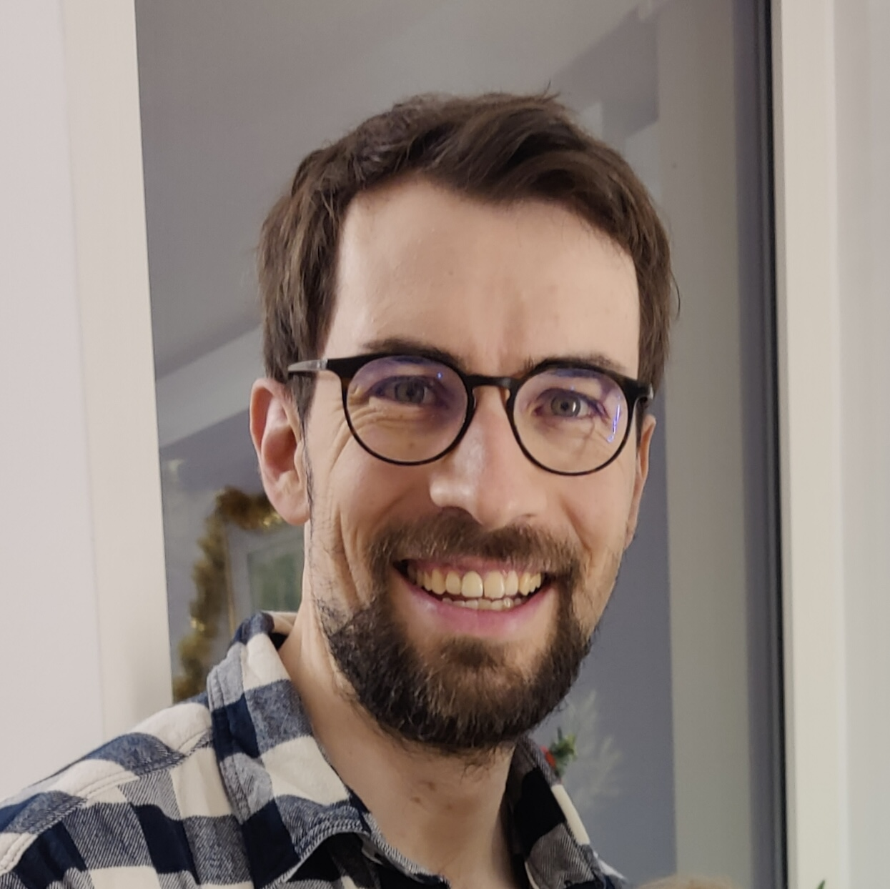
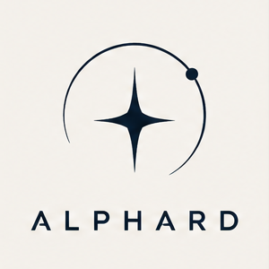

Construire votre produit
Des interfaces web aux services backend, je vous accompagne dans le développement de votre application.
Le sens du produit. Le souci du détail.

Je développe vos produits web et mobile avec une conviction : les bons choix techniques commencent par la compréhension du produit.
Découvrir mon travailDes interfaces web aux services backend, je vous accompagne dans le développement de votre application.
Donner à votre produit une expérience mobile cohérente, avec React Native et une attention portée aux performances.
Apporter un regard de CTO à vos décisions techniques. Partager les pratiques, travailler en pair et garder le cap sur les besoins produit.
Construire une technologie, c’est aussi construire l’équipe qui la fait vivre.
Chez Tilli, j’ai développé la technologie pendant neuf ans, des premières lignes de code à une équipe de huit personnes. Une expérience qui nourrit aujourd’hui mon approche du développement freelance.
Formation ingénieur à l’Ensimag
Informatique & mathématiques appliquées · 2012–2015
Une sélection de projets personnels et d’explorations techniques partagés sur GitHub.
Explorer la réalité virtuelle dans le navigateur avec un jeu construit en React et A-Frame.
Une application de liste de courses pour explorer la création d’interfaces avec Preact.
Un plugin dédié à l’opérateur de coalescence des valeurs nulles dans l’écosystème Gatsby.
C’est un développeur passionné et pointu, avec une vision claire du produit et de fortes compétences tech.
Un produit à lancer, une application à faire évoluer,
une équipe à renforcer. Faisons connaissance.

Benjamin Michel, développeur indépendant.
J’exerce mon activité au sein d’Alphard, ma SASU.